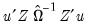
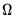
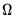

|
|
|
equations. Second, they may be heteroskedastic and contemporaneously correlated. We can characterize both of these cases by defining the
matrix of contemporaneous correlations,
, where the (i,j)-th element of
is given by for all
. If the errors are contemporaneously uncorrelated, then, for
, and we can write:
and
. The max function in Equation (43.17) is designed to handle the case of unbalanced data by down-weighting the covariance terms. Provided the missing values are asymptotically negligible, this yields a consistent estimator of the variance elements. Note also that there is no adjustment for degrees of freedom.
, EViews transforms the model (see “Specifying AR Terms”) and estimates the following equation:
are endogenous. Write the j-th equation of the system as,

is a vector of endogenous variables,
is a vector of exogenous variables. The Full Information Maximum Likelihood (FIML) estimator finds the vector of parameters
by maximizing the likelihood under the assumption that
is a vector of i.i.d. multivariate normal random variables with covariance matrix
.
given the user specified value for
.
Over the years, a number of approaches for FIML estimation have been proposed (see, for example, Parke 1982, Belsley 1980, Dagenais 1978, or Amemiya 1977). EViews offers standard BFGS, Newton-Raphson, and OPG/BHHH algorithms with various step methods in trust region form, as well as a simple implementation of BHHH with Marquardt and line search steps (“Optimization Algorithms”). See Calzolari and Panattoni (1987) and Weihs, Calzolari, and Panattoni (1986) for simulation results for the performance of various estimators.
when there are more restrictions
than there are parameters
. To allow for such overidentification, the GMM estimator is defined by minimizing the following criterion function:
, so that:

as there are parameters
. See the section on “Generalized Method of Moments” for additional examples of GMM orthogonality conditions.
If you choose the GMM-Cross section option, EViews estimatesusing White’s heteroskedasticity consistent covariance matrix:

is the
vector of mean equation residuals. For Student's t-distribution, the contributions are of the form:
,
, and
are
symmetric matrices, and the operator “•” is the element by element (Hadamard) product. The coefficient matrices may be parametrized in several ways. The most general way is to allow the parameters in the matrices to vary without any restrictions, i.e. parameterize them as indefinite matrices. In that case the model may be written in single equation format as:
, and
are any matrix up to rank
. For example, one may use the rank
Cholesky factorized matrix of the coefficient matrix. This method is labeled the Full Rank Matrix in the coefficient Restriction selection of the system ARCH dialog. While this method contains the same number of parameters as the indefinite version, it does ensure that the conditional covariance is PSD.
A second method, which we term Rank One, reduces the number of parameter estimated toand guarantees that the conditional covariance is PSD. In this case, the estimated raw matrix is restricted, with all but the first column of coefficients equal to zero.
is a scalar and
is an vector of ones. This Scalar specification implies that for a particular term, the parameters of the variance and covariance equations are restricted to be the same. Alternately, the matrix coefficients may be parameterized as Diagonal so that all off diagonal elements are restricted to be zero. In both of these parameterizations, the coefficients are not restricted to be positive, so that
is not guaranteed to be PSD.
Lastly, for the constant matrix, we may also impose a Variance Target on the coefficients which restricts the values of the coefficient matrix so that:
, for every equation. Individual coefficients allow each exogenous variable effect
to differ across equations.
 equations in stacked form as:
equations in stacked form as: vector, is a matrix, and is a vector of coefficients. The error terms
vector, is a matrix, and is a vector of coefficients. The error terms  have an covariance matrix
have an covariance matrix  . The system may be written in compact form as:
. The system may be written in compact form as: . The estimator for
. The estimator for  is given by,
is given by, is the residual variance estimate for the stacked system.
is the residual variance estimate for the stacked system. , and is the residual variance estimator:
, and is the residual variance estimator: . This latter procedure may be iterated until the weights and coefficients converge.
. This latter procedure may be iterated until the weights and coefficients converge. and
and  are unrestricted, the WLS estimator given in
are unrestricted, the WLS estimator given in  are assumed to be exogenous, and the errors are heteroskedastic and contemporaneously correlated so that the error variance matrix is given by
are assumed to be exogenous, and the errors are heteroskedastic and contemporaneously correlated so that the error variance matrix is given by  . Zellner’s SUR estimator of
. Zellner’s SUR estimator of  takes the form:
takes the form: with typical element
with typical element  , for all
, for all  and
and  .
. using and perform nonlinear GLS to complete one iteration of the estimation procedure. These iterations may be repeated until the coefficients and weights converge.
using and perform nonlinear GLS to complete one iteration of the estimation procedure. These iterations may be repeated until the coefficients and weights converge. is the matrix of endogenous variables and
is the matrix of endogenous variables and  is the matrix of exogenous variables; is the matrix of endogenous variables not including
is the matrix of exogenous variables; is the matrix of endogenous variables not including  .
. on all exogenous variables
on all exogenous variables  and get the fitted values:
and get the fitted values: to get:
to get: is estimated at each step using the current values of the coefficients and residuals.
is estimated at each step using the current values of the coefficients and residuals. . This covariance estimator is not, however, consistent if any of the right-hand side variables are endogenous. 3SLS uses the 2SLS residuals to obtain a consistent estimate of
. This covariance estimator is not, however, consistent if any of the right-hand side variables are endogenous. 3SLS uses the 2SLS residuals to obtain a consistent estimate of  .
.  has typical element:
has typical element: (or equivalently, the full likelihood with respect to
(or equivalently, the full likelihood with respect to  and the free parameters of
and the free parameters of  ).
). is asymptotically normally distributed with coefficient covariance typically computed using the partitioned inverse of the outer-product of the gradient of the full likelihood (OPG) or the inverse of the negative of the observed Hessian of the concentrated likelihood. EViews employs the OPG covariance by default, but there is evidence that one should take seriously the choice of method (Calzolari and Panattoni, 1988). In addition, EViews offers a QML covariance computation that employs a Huber-White sandwich using both the OPG and the inverse negative Hessian.
is asymptotically normally distributed with coefficient covariance typically computed using the partitioned inverse of the outer-product of the gradient of the full likelihood (OPG) or the inverse of the negative of the observed Hessian of the concentrated likelihood. EViews employs the OPG covariance by default, but there is evidence that one should take seriously the choice of method (Calzolari and Panattoni, 1988). In addition, EViews offers a QML covariance computation that employs a Huber-White sandwich using both the OPG and the inverse negative Hessian. should satisfy. We denote these moment conditions as:
should satisfy. We denote these moment conditions as: and zero.
and zero.  is a weighting matrix that weights each moment condition. Any symmetric positive definite matrix
is a weighting matrix that weights each moment condition. Any symmetric positive definite matrix  will yield a consistent estimate of
will yield a consistent estimate of  . However, it can be shown that a necessary (but not sufficient) condition to obtain an (asymptotically) efficient estimate of
. However, it can be shown that a necessary (but not sufficient) condition to obtain an (asymptotically) efficient estimate of  is to set
is to set  equal to the inverse of the covariance matrix
equal to the inverse of the covariance matrix  of the sample moments
of the sample moments  . This follows intuitively, since we want to put less weight on the conditions that are more imprecise.
. This follows intuitively, since we want to put less weight on the conditions that are more imprecise.  . EViews uses the optimal , where is the estimated long-run covariance matrix of the sample moments
. EViews uses the optimal , where is the estimated long-run covariance matrix of the sample moments  . EViews uses the consistent TSLS estimates for the initial estimate of
. EViews uses the consistent TSLS estimates for the initial estimate of  in forming the estimate of
in forming the estimate of  .
.  is the vector of residuals, and
is the vector of residuals, and  is a
is a  matrix such that the
matrix such that the  moment conditions at
moment conditions at  may be written as .
may be written as . by,
by, and the
and the  .
.  is used to weight the covariances so that is ensured to be positive semi-definite. EViews provides two choices for the kernel, Bartlett and quadratic spectral (QS). The Bartlett kernel is given by:
is used to weight the covariances so that is ensured to be positive semi-definite. EViews provides two choices for the kernel, Bartlett and quadratic spectral (QS). The Bartlett kernel is given by: (which need not be an integer).
(which need not be an integer).  determines how the weights given by the kernel change with the lags in the estimation of . Newey-West fixed bandwidth is based solely on the number of observations in the sample and is given by:
determines how the weights given by the kernel change with the lags in the estimation of . Newey-West fixed bandwidth is based solely on the number of observations in the sample and is given by: and
and  .
.  and
and  are estimated by,
are estimated by, is a vector of ones and:
is a vector of ones and:  . The choice of
. The choice of  is arbitrary, subject to the condition that it grow at a certain rate. EViews sets the lag parameter to:
is arbitrary, subject to the condition that it grow at a certain rate. EViews sets the lag parameter to: to “soak up” the correlations in
to “soak up” the correlations in  prior to GMM estimation. We first fit a VAR(1) to the sample moments:
prior to GMM estimation. We first fit a VAR(1) to the sample moments: of
of  is estimated by
is estimated by  where is the long-run variance of the residuals
where is the long-run variance of the residuals  computed using any of the above methods. The GMM estimator is then found by minimizing the criterion function:
computed using any of the above methods. The GMM estimator is then found by minimizing the criterion function: is the estimated degree of freedom.
is the estimated degree of freedom. .
. to be PSD, possibly by reducing the number of parameters. One example is:
to be PSD, possibly by reducing the number of parameters. One example is: , , and . These coefficients must be transformed to obtain the matrix of interest: , , and . These transformed coefficients are reported in the extended variance coefficient section at the end of the system estimation results.
, , and . These coefficients must be transformed to obtain the matrix of interest: , , and . These transformed coefficients are reported in the extended variance coefficient section at the end of the system estimation results. matrix may be a constant, so that:
matrix may be a constant, so that: is the unconditional sample variance of the residuals. When using this option, the constant matrix is not estimated, reducing the number of estimated parameters.
is the unconditional sample variance of the residuals. When using this option, the constant matrix is not estimated, reducing the number of estimated parameters. .
. and
and  are unrestricted. However, a common and popular form, diagonal BEKK, may be specified that restricts
are unrestricted. However, a common and popular form, diagonal BEKK, may be specified that restricts  and
and  to be diagonals. This Diagonal BEKK model is identical to the Diagonal VECH model where the coefficient matrices are rank one matrices. For convenience, EViews provides an option to estimate the Diagonal VECH model, but display the result in Diagonal BEKK form.
to be diagonals. This Diagonal BEKK model is identical to the Diagonal VECH model where the coefficient matrices are rank one matrices. For convenience, EViews provides an option to estimate the Diagonal VECH model, but display the result in Diagonal BEKK form.